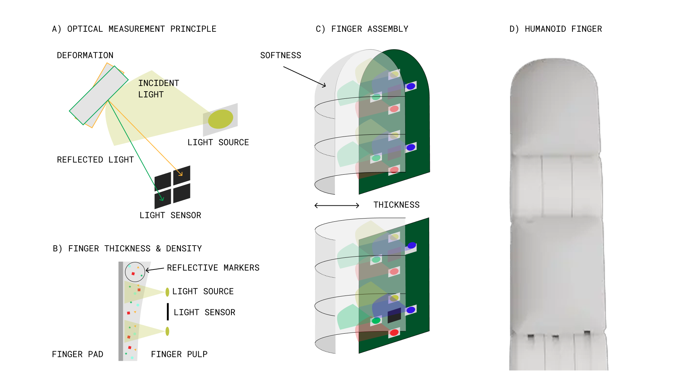
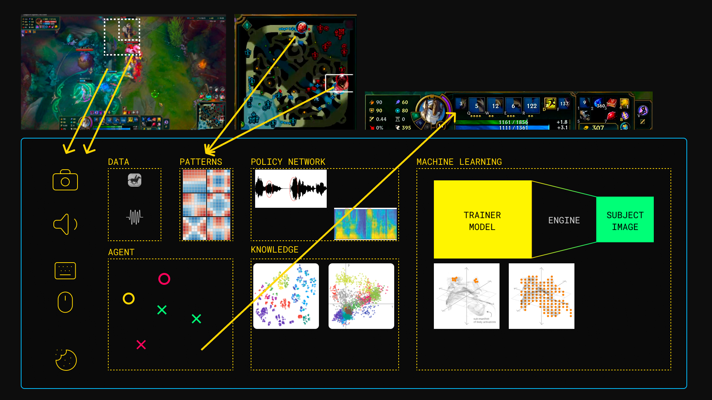
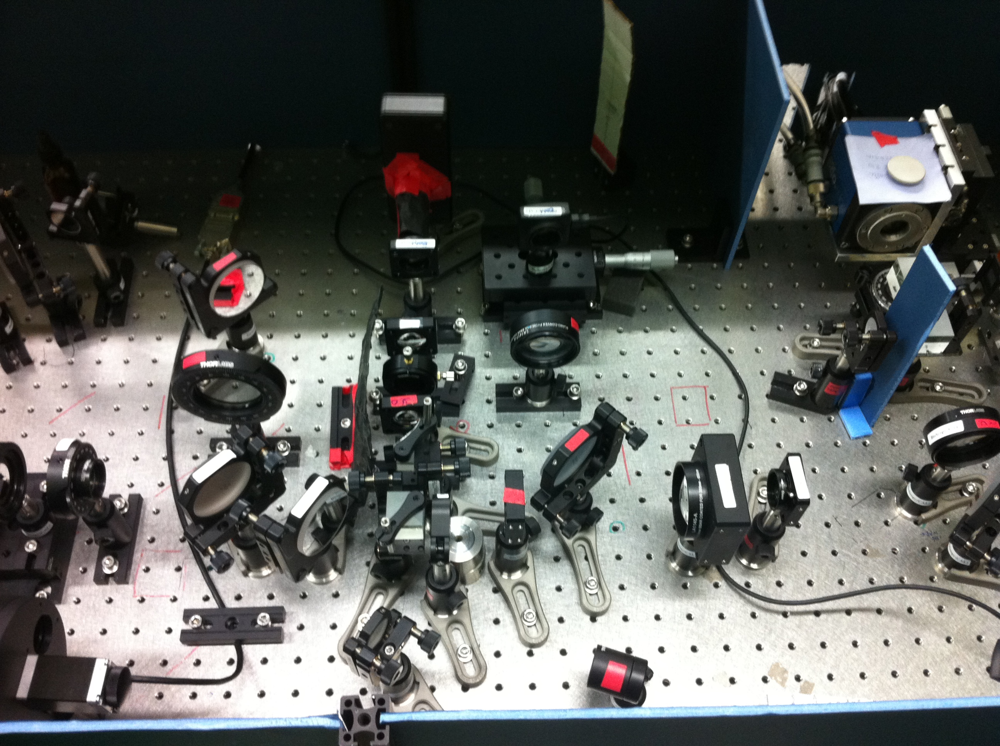
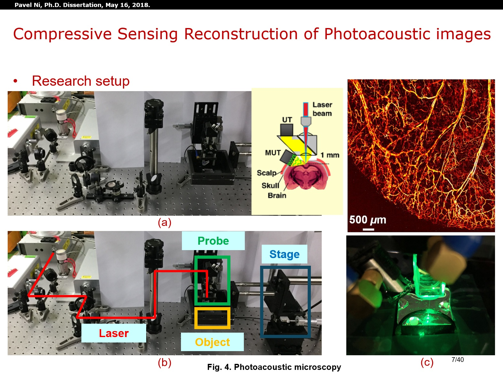

🔍 Research Interest
My research interests focus on developing intelligent robotic systems by integrating advances in artificial intelligence, robotics, Vision-Language Models (VLMs), and Large Language Models (LLMs). My primary research interest is long-horizon planning and autonomous decision-making for embodied agents, particularly how robots can reason, plan, and adapt over extended sequences of actions in complex, dynamic environments.
🏅 Projects
- Optical Tactile Sensor Design - Proposed a reflective optical tactile sensor using photodetectors and embedded reflective markers within a soft finger pad. Developed a signal-processing framework linking photodetector signals to mechanical finger pad deformation, and characterized tactile sensor sensitivity, spatial resolution, and sensing performance across varying contact forces and contact positions.

Link: TBD - Long-Horizon Agents - High-quality League of Legends gameplay screen captures synchronized with keyboard and mouse inputs for training long-horizon robotic agents. It provides a complex, multi-step environment that can be abstracted and translated into physical robotic tasks such as object grasping and manipulation.

Link: https://huggingface.co/datasets/fiveoceans-dev/nextmetal-lol
💪 Skills
- Programming Languages: Python, C++, JavaScript/TypeScript, Swift, Bash, SQL
- Software Development: OOP, Algorithms, Data Structures
- Machine Learning & AI: PyTorch, TensorFlow, OpenCV
- Robotics: ROS/ROS2, MuJoCo, Sensor Fusion, Tactile Sensing
- DevOps & Cloud: Linux/Unix, Docker, AWS, GCP
🛠️ Experience
2021–2026, Co-Founder & Research Scientist, Platon HQ- Developed RNN-based AI tools for automated detection and analysis of logical errors in python code.
- Designed and implemented AI applications for object detection, estimation, and tracking.
2021–2021, Postdoctoral Researcher, Gwangju Institute of Science and Technology
- Conducted research in signal processing, image processing, and multi-sensor fusion.
- Worked on optical setups and data acquisition systems.


2009–2011, Software Engineer, UNITEL LLC
- Worked extensively with Unix/Linux systems, shell scripting, and Oracle databases.
- Designed and developed automated testing frameworks for voice, SMS, and mobile data billing systems.
- Performed database analysis, optimization, SQL querying, and statistical reporting.
- Maintained and improved software testing infrastructure, databases, and automated testing environments.
👨🎓 Education
2012-2021, M.S. & Ph.D
Gwangju Institute of Science and Technology, GIST (Gwangju, South Korea)
Electrical Engineering and Computer Science
- Thesis: Ultrasound Medical Imaging: A Novel Super-Resolution Imaging Technique Utilizing Random Interference
- Proposed a novel super-resolution ultrasound imaging technique that combines the physics of random interference with advanced sparse signal processing methods.
- Developed the theoretical framework, simulation models, and experimental validation for the proposed imaging approach.
- Demonstrated that sparse spatial representation significantly improves ultrasound image resolution beyond conventional techniques.
- Successfully reconstructed ultrasound images of nylon wires with diameters as small as 0.08 mm, validating the effectiveness of the proposed method.
2005-2009, B.S.
Tashkent University of Info and Tech, TUIT (Tashkent, Uzbekistan)
Telecommunication Engineering
- Thesis: Telecommunication Switching System Design
- Worked on broadband associative switching networks.
- Designed algorithms optimizing the performance of network switch devices.
- Deep knowledge of 2G~5G networks, Network Protocols, Unix Systems, Databases.
📑 Publications
- Pavel S. Ni and Heung-No Lee, “Apparatus of ultrasound imaging using random interference and method of the same”, Patent No. P20-0073-KR01, 2019. Patent
- Pavel S. Ni and Heung-No Lee*, “High-Resolution Ultrasound Imaging Using Random Interference“, IEEE Transactions on Ultrasonics, Ferroelectrics, and Frequency Control (T-UFFC), March 2020. Impact Factor: 2.989. Part of Do-Yak project. Journal
- Pavel S. Ni and Heung-No Lee*, “High-Resolution Ultrasound Imaging Enabled by Random Interference and Joint Image Reconstruction”, Sensors 2020, 20(22), 6434. Impact Factor: 3.275. Part of Do-Yak project. Journal
- Cheolsun Kim, Pavel S. Ni, Kang Ryeol Lee, and Heung-No Lee*, “Mass production-enabled computational spectrometers based on multilayer thin films”, Accepted in Scientific Reports. Impact Factor: 4.380. Part of Do-Yak project. Journal